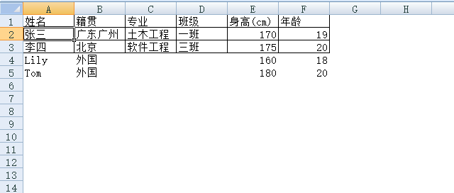
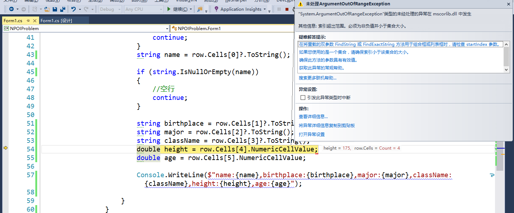
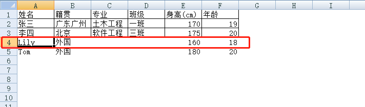
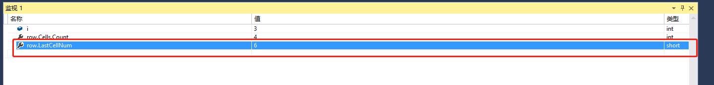
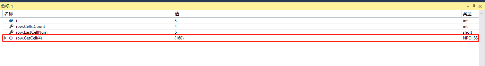
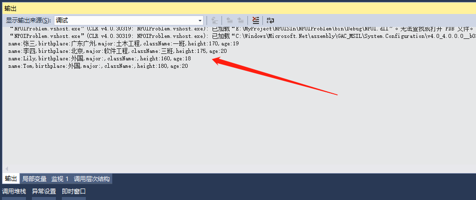

原文出处:本文由博客园博主Jichan·Jong提供。
原文连接:https://www.cnblogs.com/godbell/p/11524896.html
原文连接:https://www.cnblogs.com/godbell/p/11524896.html
在.net 下一般使用NPOI操作Excel相信大家都不陌生，但是本人在操作过程中遇到一个比较奇怪的问题，特写此博客记录与大家分享。
例子是使用Winform，点击按钮时弹出打开文件对话框，然后选择文件来读取Excel。
最开始代码时这样写的：


1 private void button1_Click(object sender, EventArgs e)
2 {
3 OpenFileDialog ofd = new OpenFileDialog {Filter = "excel文件|*.xls"};
4 if (ofd.ShowDialog() == DialogResult.OK)
5 {
6 using (FileStream fs = new FileStream(ofd.FileName, FileMode.Open, FileAccess.Read))
7 {
8 IWorkbook workbook = new HSSFWorkbook(fs);
9 ISheet sheet = workbook.GetSheetAt(0);
10
11 //总共有多少行
12 int lastRowNum = sheet.LastRowNum;
13 int firstRowNum = sheet.FirstRowNum;
14
15 for (int i = firstRowNum + 1; i <= lastRowNum; i++)
16 {
17 IRow row = sheet.GetRow(i);
18 if (row == null)
19 {
20 continue;
21 }
22 string name = row.Cells[0]?.ToString();
23
24 if (string.IsNullOrEmpty(name))
25 {
26 //空行
27 continue;
28 }
29
30 string birthplace = row.Cells[1]?.ToString();
31 string major = row.Cells[2]?.ToString();
32 string className = row.Cells[3]?.ToString();
33 double height = row.Cells[4].NumericCellValue;
34 double age = row.Cells[5].NumericCellValue;
35
36 Console.WriteLine($"name:{name},birthplace:{birthplace},major:{major},className:{className},height:{height},age:{age}");
37
38 }
39 }
40 }
41 }然后Excel是这样的：

调试时，遇到错误：

监视变量i，看是循环到第几行：
这里是3，也就是第三行（标题除外），第三行的内容是这样的：

这里解释一下，这个表格使用了白色背景填充，然后前面三行（包括标题在内）使用了实线的细边框。
再在监视里输入代码row.Cells.Count，获取得到的结果是4，也就是第三行只有4“列”（这里列加了双引号）。明明就有6列，怎么会只有4列，于是再在监视里输入row.LastCellNum，得到的结果是6。

这里可以看出有6列，我们知道获取列有row.Cells[i] 或者是 row.GetCell(i) ， 于是尝试在监视里输入row.GetCell(4)，看是否会报错：

发现没有报错，而且“值“一栏是正确的列的内容。
于是将代码里row.Cells[i] 改成 row.GetCell(i) 的形式：
private void button1_Click(object sender, EventArgs e)
{
OpenFileDialog ofd = new OpenFileDialog {Filter = "excel文件|*.xls"};
if (ofd.ShowDialog() == DialogResult.OK)
{
using (FileStream fs = new FileStream(ofd.FileName, FileMode.Open, FileAccess.Read))
{
IWorkbook workbook = new HSSFWorkbook(fs);
ISheet sheet = workbook.GetSheetAt(0);
//总共有多少行
int lastRowNum = sheet.LastRowNum;
int firstRowNum = sheet.FirstRowNum;
for (int i = firstRowNum + 1; i <= lastRowNum; i++)
{
IRow row = sheet.GetRow(i);
if (row == null)
{
continue;
}
string name = row.GetCell(0)?.ToString();
if (string.IsNullOrEmpty(name))
{
//空行
continue;
}
string birthplace = row.GetCell(1)?.ToString();
string major = row.GetCell(2)?.ToString();
string className = row.GetCell(3)?.ToString();
double height = row.GetCell(4).NumericCellValue;
double age = row.GetCell(5).NumericCellValue;
Console.WriteLine($"name:{name},birthplace:{birthplace},major:{major},className:{className},height:{height},age:{age}");
}
}
}
}再次调试，没有报错，在输出窗口有以下的信息：
